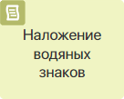
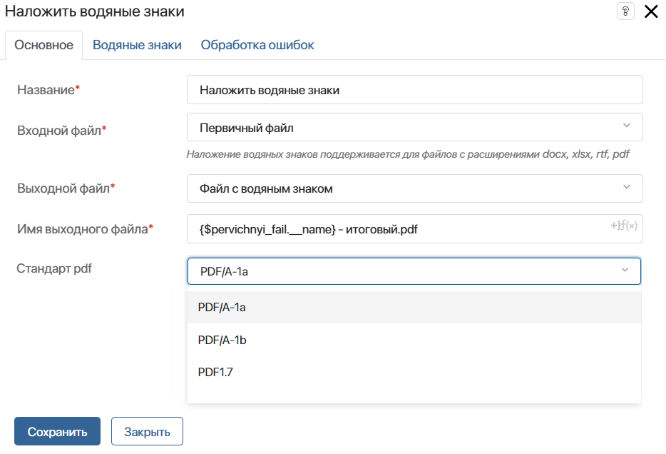
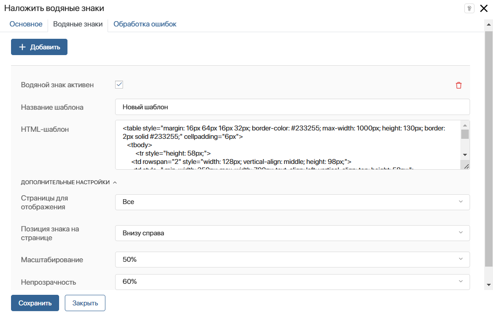
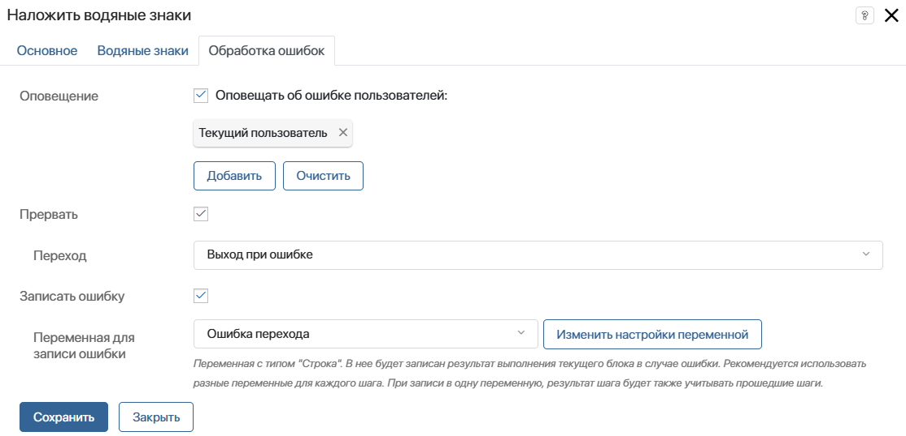

Блок Наложение водяных знаков позволяет в ходе бизнес-процесса наносить водяные знаки на исходные файлы форматов .docx, .xlsx, .rtf, .pdf. В настройках графического элемента вы можете управлять шаблонами водяных знаков: их внешним видом, количеством, расположением на странице и т. д. В результате генерируются файлы в формате .pdf.
В отличии от файла с водяными знаками, который можно получить при использовании печатной формы документов, файл, полученный из этого блока, автоматически сохраняется в отдельную переменную. Её можно использовать в ходе бизнес‑процесса, например, чтобы отправлять на согласование, сохранять в базе или высылать контрагентам на почту.
Рассмотрим применение блока в процессе составления счёта и отправки его на электронную почту контрагента. В ходе бизнес‑процесса сотрудник вносит данные, которые отправляются на проверку бухгалтеру. На основе проверенных данных формируется счёт, на который затем накладывается водяной знак. Готовый документ отправляется на электронную почту контрагента с помощью блока Оповещение на email.
Схема процесса при этом может выглядеть следующим образом:

Настройка блока
На странице процесса на панели инструментов справа от поля для моделирования откройте вкладку Системные элементы.
Перетащите блок Наложение водяных знаков на схему и разместите его там, где в ходе выполнения процесса потребуется нанести на файл водяной знак.
Чтобы открыть окно с настройками, дважды нажмите на добавленный блок.
Вкладка «Основное»

- Название* — укажите название блока, которое отобразится на схеме процесса;
- Входной файл* — выберите из контекста процесса переменную типа Файлы, содержащую документ, на который нужно наложить водяной знак;
- Выходной файл* — выберите из контекста процесса переменную типа Файлы, в которую запишется документ с водяным знаком;
- Имя выходного файла* — укажите название, которое будет присваиваться новому файлу после наложения водяного знака, и формат документа — .pdf. Например, Счёт — итоговый.pdf. Чтобы добавить в название переменную из контекста процесса, нажмите значок {+} в правой части поля. Чтобы использовать функцию DateTime(), нажмите значок f(x). Для формирования более сложного названия вы можете использовать другие функции, вписав их в поле вручную. Подробнее об использовании функций читайте в статье «Синтаксис шаблонов»;
- Стандарт pdf — выберите нужный формат .pdf. По умолчанию установлен вариант PDF/A-1a. Также доступны форматы PDF/A-1b и PDF1.7
Вкладка «Водяные знаки»
Для создания и настройки шаблона водяного знака нажмите кнопку + Добавить.

- Водяной знак активен — отметьте опцию, чтобы настроенный шаблон наносился на документ;
- Название шаблона — введите название нового шаблона для водяного знака;
- HTML-шаблон — укажите HTML-код шаблона. Формирование в шаблоне выполняется с помощью тэгов, как в обычном HTML‑документе.
В шаблоне можно использовать контекстные переменные, которые должны выглядеть следующим образом: {$имя_переменной}. Имя переменной уникально и пишется латинскими буквами, например, {$kontragent}.
Пример HTML-шаблона водяного знака
<table style="margin: 16px 64px 16px 32px; border-color: #233255; max-width: 1000px; height: 130px; border: 2px solid #233255;" cellpadding="6px"> |
Обратите внимание, в шаблоне водяного знака можно использовать не все теги, атрибуты и CSS‑свойства, доступные для языка разметки HTML. Полный список разрешённых компонентов представлен в статье «Печатная форма документа».
- Страницы для отображения — выберите, на каких страницах документа отображать водяной знак: Все, Первая, Последняя;
- Позиция знака на странице — определите расположение водяного знака в документе: По центру, Вверху слева, Вверху справа, Внизу слева, Внизу справа;
- Масштабирование — задайте процент масштабирования водяного знака;
- Непрозначность — укажите процент непрозрачности водяного знака.
Вы можете создать неограниченное количество шаблонов. При этом на одном документе можно отобразить несколько водяных знаков. Для этого в настройках нужных шаблонов включите опцию Водяной знак активен.
Чтобы удалить шаблон водяного знака, нажмите значок корзины.
Вкладка «Обработка ошибок»
Водяные знаки можно применить к файлам форматов .docx, .xlsx, .rtf, .pdf. Если пользователь приложит файл другого формата, во время исполнения процесса возникнет ошибка при наложении водяных знаков. На вкладке Обработка ошибок определите дальнейшие действия для такого случая:

- Оповещение — включите опцию, чтобы указанные в этом поле пользователи получили уведомление об ошибке. Вы можете выбрать: текущего пользователя, контекстную переменную, группу или элемент оргструктуры;
- Прервать — включите опцию и выберите переход, по которому пойдёт процесс в случае ошибки;
- Записать ошибку — включите опцию и укажите переменную, в которую запишется текст ошибки.
После заполнения полей нажмите Сохранить.
Когда процесс дойдёт до настроенного блока, на файл будет наложен водяной знак согласно установленным параметрам. Новый документ в формате .pdf сохранится в переменную, которая была указана в качестве выходного файла. Вы можете использовать эту переменную в ходе процесса, например, добавить её на форму задачи или использовать в скрипте.